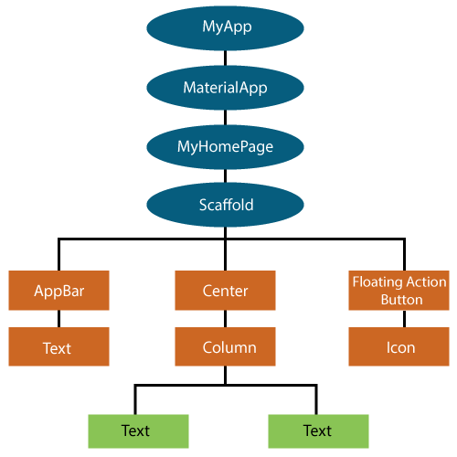

Unit 5.1. Introduction to Flutter
Flutter is an open-source UI software development kit created by Google. It is used to develop cross-platform applications for Android, iOS, Linux, macOS, Windows and the web from a single codebase. Flutter was first announced in 2015 and released in May 2017.
Key Features of Flutter
- Cross-Platform Development: Write once, run anywhere. Flutter allows developers to create applications that work on multiple platforms without needing to rewrite code for each one.
- Hot Reload: Flutter's hot reload feature allows developers to see changes in real-time without restarting the application, significantly speeding up the development process.
- Rich Widget Library: Flutter provides a comprehensive set of pre-designed widgets that follow both Material Design (for Android) and Cupertino (for iOS) guidelines, enabling developers to create visually appealing UIs.
- High Performance: Flutter applications are compiled to native code, which ensures high performance and smooth animations.
- Customizable UI: Flutter's widget-based architecture allows for extensive customization of UI components, enabling developers to create unique designs.
- Strong Community and Ecosystem: Flutter has a growing community and a rich ecosystem of packages and plugins that extend its functionality.
The Dart Programming Language
Flutter uses Dart as its programming language. Dart is an object-oriented, class-based language with a syntax similar to JavaScript and Java.
It is designed for building high-performance applications and offers features such as:
- Ahead-of-Time (AOT) Compilation: Dart can be compiled to native code (machine code), which improves the performance of Flutter applications.
- Just-in-Time (JIT) Compilation: During development, Dart supports JIT compilation, allowing for features like hot reload.
- Asynchronous Programming: Dart has built-in support for asynchronous programming using
asyncandawait, making it easier to handle tasks like network requests and file I/O.
The Dart language documentation can be found at: https://dart.dev/guides
The Flutter Widgets
In Flutter, everything is a widget. Widgets are the building blocks of a Flutter application's user interface. They describe what their view should look like given their current configuration and state. There are two main types of widgets:
- Stateless Widgets: These widgets do not maintain any state. They are immutable and are rebuilt whenever their configuration changes. Examples include
Text,Icon, andRaisedButton. - Stateful Widgets: These widgets maintain state that can change over time. They are mutable and can rebuild themselves when their state changes. Examples include
Checkbox,TextField, andSlider.
You can learn more about Flutter widgets at: https://flutter.dev/docs/development/ui/widgets
In the next table you can see the correspondence between the most common Jetpack Compose composables and their Flutter widget equivalents:
| Jetpack Compose Composable | Flutter Widget |
|---|---|
| Text | Text |
| Button | ElevatedButton |
| Column | Column |
| Row | Row |
| Box | Container |
| Image | Image |
| Scaffold | Scaffold |
| TextField | TextField |
| LazyColumn | ListView |
| Card | Card |
| Icon | Icon |
| FloatingActionButton | FloatingActionButton |
| Modifier | BoxDecoration / EdgeInsets / etc. |
| Spacer | SizedBox |
| TopAppBar | AppBar |
| Snackbar | SnackBar |
The widgets tree
In Flutter, the user interface is built using a hierarchical structure of widgets, known as the widget tree. Each widget can have child widgets, which in turn can have their own children, forming a tree-like structure. The root of the tree is typically a MaterialApp or CupertinoApp widget, which provides the overall structure and theme for the application.
The widget tree is essential for understanding how Flutter builds and renders the UI. When a widget's state changes, Flutter efficiently rebuilds only the affected parts of the widget tree, ensuring optimal performance.
For instance, a simple Flutter app might have a widget tree that looks like this:

Material and Cupertino
Flutter provides two sets of design languages: Material Design (used for Android) and Cupertino (used for iOS).
The Material design language was created for any platform, not just Android. When you write a Material app in Flutter, it has the Material look and feel on all devices, even iOS. If you want your app to look like a standard iOS-styled app, then you would use the Cupertino library.
You can technically run a Cupertino app on either Android or iOS, but (due to licensing issues) Cupertino won't have the correct fonts on Android. For this reason, use an iOS-specific device when writing a Cupertino app.
Starting with Flutter
To start developing with Flutter, you need to set up your development environment. Follow the steps form the official Flutter installation guide
Task
- Create a new Flutter App project using Android Studio (don't forget to install the Flutter and Dart plugins).
- Explore the default project structure and identify the main files and directories.
- Run the default Flutter app on an emulator or physical device to see it in action.
- Add the plugin Flutter Snipets by George Herbert and try some of the snippets listed in https://github.com/georgeherby/flutter-snippets/blob/master/README.md
The most important files and directories in a Flutter project are:
lib/main.dart: The main entry point of the application where the app's execution starts.pubspec.yaml: The configuration file for the project, where you can specify dependencies, assets, and other settings.analysis_options.yaml: Configuration file for static analysis options.android/,ios/,linux/,windows/,web/: Directories containing platform-specific code for each platform, respectively.test/: Directory for writing unit and widget tests for the application.
Installing packages
Flutter uses a package manager called pub to manage dependencies. You can add packages to your project by specifying them in the pubspec.yaml file under the dependencies section. After adding a package, run flutter pub get to install it.
Otherwise, you can use the command line to add packages. For example, to add the http package, you would run:
1 2 | |
If we want to add a package only for the developer environment (for example, testing packages), we can add it under the dev_dependencies section:
1 2 | |
We can specify a particular version of a package by appending the version number:
1 2 | |
Here, ^0.13.0 indicates that we want to use version 0.13.0 or any compatible newer version.
Other useful commands are:
flutter pub upgrade: Upgrades all the dependencies to the latest versions.flutter pub remove <package_name>: Removes a package from the dependencies.flutter pub deps: Lists all the dependencies in the project along with their versions.
For search and explore available packages, you can visit the pub.dev website.
Task
- Do the Codelab Write your first Flutter app
- Refactor the default Flutter app to separate the app's parts in screens, states and components folders.
Flutter Documentation and Resources
Some useful links to learn more about Flutter:
- Official Flutter Documentation: https://flutter.dev/docs
- Flutter learning resources: https://flutter.dev/learn
- Flutter widget catalog: https://flutter.dev/docs/development/ui/widgets/catalog
- Flutter YouTube Channel: https://www.youtube.com/flutterdev